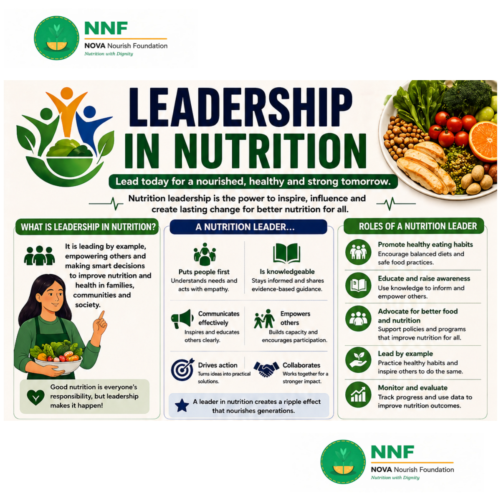

What Is Leadership in Nutrition?
Nutrition leadership means leading by example, empowering others, and making smart decisions to improve nutrition and health in families, communities, and society. It's not about having a title or position — it's about taking responsibility and inspiring those around you to do better.
"Good nutrition is everyone's responsibility, but leadership makes it happen."
Why Youth Leaders Are the Key
Young people in Bagerhat and across Bangladesh have a unique opportunity and responsibility. As the most connected generation, youth leaders can reach their peers, families, and communities in ways that adults and institutions often cannot. When young people champion nutrition, they create ripple effects that nourish entire generations.
What a Nutrition Leader Does
- Puts people first: Understands community needs and acts with empathy and compassion.
- Is knowledgeable: Stays informed and shares evidence-based, accurate information.
- Communicates effectively: Inspires and educates others clearly and accessibly.
- Empowers others: Builds the capacity of others to make their own informed choices.
- Drives action: Turns ideas into practical, real-world solutions.
- Collaborates: Works with others — families, schools, organizations — for stronger impact.
Roles of a Nutrition Leader
1. Promote Healthy Eating Habits
Encourage balanced diets and safe food practices in your home and community. Lead by example — eat well yourself first.
2. Educate and Raise Awareness
Use your knowledge to inform and empower others. Run workshops, share infographics, talk to parents, teach children about healthy food choices.
3. Advocate for Better Food Access
Support policies and programs that improve nutrition for everyone — especially those most vulnerable. Speak up for better school meals, community gardens, or local food systems.
4. Lead by Example
Practice healthy habits yourself and inspire others to do the same. Your daily choices are your most powerful advocacy tool.
5. Monitor and Evaluate
Track the progress of your community's nutrition improvements and use data to guide further action and decision-making.
Principles of Nutrition Leadership
Core Principles (People, Purpose, Impact)
- Equity: Ensure everyone has access to good nutrition — regardless of income, gender, or location.
- Sustainability: Promote food practices that protect resources for a healthy planet and future generations.
- Accountability: Be responsible and transparent in your actions and communications.
- Respect: Value diversity, culture, and individual needs in all nutrition recommendations.
- Evidence: Use science and data to guide decisions, not myths or misinformation.
- Collaboration: Stronger together — partner with others for greater impact.
Key Leadership Skills in Nutrition
- Vision: See the bigger picture and set meaningful goals.
- Communication: Listen, speak, and connect to inspire and inform.
- Decision Making: Use evidence and values to make the right choices.
- Problem Solving: Find practical solutions to real nutrition challenges.
- Time Management: Prioritize tasks and lead with focus.
- Integrity: Be honest, responsible, and trustworthy in everything you do.
How to Become a Nutrition Leader
- Keep learning: Stay updated with the latest nutrition science and best practices.
- Be passionate: Let your drive for change fuel your purpose and actions.
- Build relationships: Network and collaborate with individuals and organizations who share your values.
- Be consistent: Small, consistent actions lead to big systemic changes over time.
- Mentor others: Guide and support the next generation of nutrition leaders.
- Celebrate progress: Recognize achievements — your own and others' — to keep momentum going.
Together, We Can:
- Fight malnutrition in all its forms across Bangladesh
- Build healthier, stronger communities from the ground up
- Create a smarter, more nourished nation
- Secure a better, healthier future for all
"Leadership in nutrition is not about being in charge — it is about taking care of those in our charge. Lead with knowledge. Serve with heart. Impact for a healthy tomorrow."
— NOVA Nourish Foundation